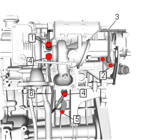
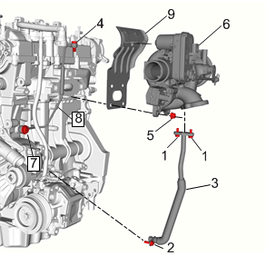
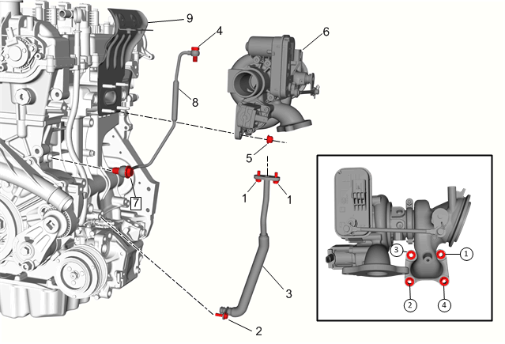

涡轮增压器的更换
专用工具
EN-45059角度测量仪
本地同等专用工具：专用工具
拆卸程序
告诫：如果涡轮增压器出现故障，则在安装新的涡轮增压器之前，清除增压空气冷却器系统上的任何涡轮增压器碎屑或过多机油。如果未将增压空气冷却器系统上的碎屑清除干净，则起动时会造成严重的涡轮增压器和发动机故障。
- 1.断开蓄电池负极电缆。蓄电池负极电缆的断开和连接
- 2.排空冷却系统。冷却系统的排放和加注
- 3.排空发动机机油。发动机机油和机油滤清器的更换
- 4.进气歧管盖»拆下–进气歧管盖的更换
- 5.涡轮增压器隔热罩»拆下–涡轮增压器隔热罩的更换
- 6.空气滤清器出气管»拆下–空气滤清器出气管的更换
- 7.三元催化转化器»拆下–三元催化转化器的更换
-
8.增压空气冷却器进口管螺栓（1）»拆下[2x]

- 9.增压空气冷却器进口管（2）@增压器»断开
- 10.发电机»拆下–发电机的更换
-
11.增压器冷却液回液管螺栓(1,2)»拆下注意:检查拆下各管路端的垫片。如果垫片损坏，安装新垫片。
- 12.增压器冷却液回液管(3)»拆下
- 13.增压器冷却液供液管螺栓(4)»拆下[2x]
- 14.增压器冷却液供液管支架螺栓(5)»拆下
- 15.增压器冷却液供液管(6)»拆下
-
16.增压器回油管螺栓(1,2)»拆下注意:检查拆下各管路端的垫片。如果垫片损坏，安装新垫片。
- 17.增压器回油管(3)»拆下
- 18.增压器供油管紧固件(4)»拆下
- 19.增压器螺母(5)»拆下[4x]
- 20.增压器(6)»拆下
- 21.增压器供油管螺栓(7)»拆下
- 22.增压器供油管(8)»拆下
- 23.增压器密封垫(9)»拆下并报废
- 24.有关涡轮增压器的清洁与检查，请参见涡轮增压器的清洁与检查。
安装程序
-
1.安装新的增压器密封垫。(9)
- 2.增压器供油管(8)»安装告诫：有关紧固件的告诫
- 3.增压器供油管螺栓(7)@发动机»安装并紧固25 N•m（18 lb ft）
- 4.增压器(6)»安装
- 5.安装并用手拧紧增压器螺母。(5)[4x]
- 7.按顺序将增压器螺母拧紧。
- 7.1 第一遍将螺栓紧固至20 N•m（15 lb ft）。
- 7.2 最后一遍使用EN-45059角度测量仪将螺栓紧固60度。
- 8.增压器供油管紧固件(4)@增压器»安装并紧固20 N•m（15 lb ft）
- 9.增压器回油管(3)»安装
- 10.增压器回油管螺栓(1,2)»安装并紧固10 N•m (89 lb in)
- 11.增压器冷却液回液管(3)»安装
- 12.增压器冷却液回液管螺栓(1)@增压器»安装并紧固30 N•m (22 lb ft)
- 13.增压器冷却液回液管螺栓(2)@发动机»安装并紧固[2x]10 N•m (89 lb in)
- 14.增压器冷却液供液管(6)»安装
- 15.增压器冷却液供液管螺栓(4)»安装并紧固[2x]30 N•m (22 lb ft)
- 16.增压器冷却液供液管支架螺栓(5)»安装并紧固10 N•m (89 lb in)
- 17.发电机»安装–发电机的更换
-
18.增压空气冷却器进口管（2）»安装
- 19.增压空气冷却器进口管螺栓（2）»安装并紧固[2x]22 N•m (16 lb ft)
- 20.三元催化转化器»安装–三元催化转化器的更换
- 21.空气滤清器出气管»安装–空气滤清器出气管的更换
- 22.安装涡轮增压器隔热罩»安装–涡轮增压器隔热罩的更换
- 23.进气歧管盖»安装–进气歧管盖的更换
- 24.重新加注发动机机油。发动机机油和机油滤清器的更换
- 25.重新加注冷却系统。冷却系统的排放和加注
- 26.连接蓄电池负极电缆。蓄电池负极电缆的断开和连接